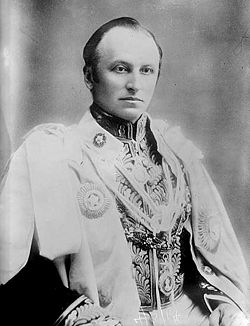

George Nathaniel Marki Curzon [Lord Gürzon] (1859-1925)

Ýngiliz siyaset ve devlet adamlarýndandýr. Ülkemizde Lord Gürzon olarak tanýnmaktadýr. Çoðu kaynaklarda Lord Gürzon adýyla tanýtýlýrken, bazýlarýnda da Lord Curzon olarak anýlmaktadýr. Kedleston baronu ve kontu olarak bilinmektedir. Hindistan genel valiliðinde bulunmuþtur. Birinci Dünya Savaþý'ndan sonra Dýþiþleri Bakanlýðýna getirilmiþ ve yeni dünya düzeninin saðlanmasý görüþmelerinde Ýngiltere'yi temsil etmiþtir. Birinci Dünya Savaþý sonrasýnda özellikle Ortadoðu'nun yeniden þekillenmesinde ve Ýngiltere'nin menfaatleri doðrultusunda, devlet ve milletlere þekil verilmesinde önemli rol oynayanlardan biri olmuþtur. Ömrü boyunca aksi kiþiliði ve dengesizliði ile tebarüz etmiþtir. Lozan görüþmelerinde Ýngiliz heyetine baþkanlýk etmiþtir. Ýsmi, Risale-i Nur'da, Büyü Doðu dergisinin 29. sayýsýndan iktibas edilen Lozan Antlaþmasýyla ilgili bir makale münasebetiyle yer almaktadýr.Curzon, 1859 yýlýnda doðdu. Çocukluðundan itibaren dikbaþlý, sýk sýk öðretmenleriyle çatýþan, duygulu kiþiliði ile dikkat çekti. Ancak, derslerdeki baþarýsý, problemleri çözme becerisi ve yeteneði sayesinde çok baþarýlý oldu. On beþ yaþlarýnda iken attan düþerek sýrtýný incitti. Doktorlarýn tavsiyesine uymadýðýndan dolayý iyileþmediði gibi, þiddetli aðrýlar çekti. Ömür boyu devam eden ve uykularýnýn kaçmasýna sebep olan aðrýlardan kurtulmak için uyuþturucu kullandý. Buna paralel olarak da mesleki hayatýnda ve devlet iþleriyle uðraþtýðý dönemlerde dengesizliði ve aksi kiþiliði ile tanýndý.
Curzon, 1878 yýlýnda Oxford'a girdi. 1883 yýlýnda da öðretim üyesi oldu. Üst makamlarda bulunan kiþilerle yakýn iliþki kurmadaki baþarýsý sayesinde, kýsa zamanda önemli bir çevre edindi. Lordlar Kamarasý liderinin teklifi üzerine aday gösterildi ve 1886 yýlýnda milletvekili seçilerek parlamentoya girdi. Milletvekili seçilmesinin akabinde dünya turuna çýktý. Özellikle Asya kýtasýnda bulunan ülkeleri dolaþtýktan sonra buralardan çok etkilendi ve dönüþünde üç kitap yazdý.
Curzon, 1891 yýlýnda Hindistan iþlerinden sorumlu Devlet Bakanlýðý Müsteþarlýðýna atandý. Dört yýl sonra Dýþiþleri Bakan Yardýmcýlýðýna ve 1898 yýlýnda da Hindistan Genel Valiliðine getirildi. Görevine baþladýktan sonra, yerli halka kötü davranan Ýngilizlerin cezalandýrýlmasýný istedi. Bazý vergilerde indirim yaptý. Hindistan'ýn sýnýrlarýnýn korunmasý ve Rus yayýlmasýnýn önlenmesi için çaba sarf etti. Böylece kendi sömürgeleri olan Hindistan'ýn güvenliðini saðlamýþ oldu. Ayrýca bütün eyaletleri dolaþmak suretiyle bölgeyi yakýndan tanýmýþ oldu.
Hindistan'da beþ yýllýk görev süresi dolan Curzon, baþarýlý görülerek görev süresi uzatýldý. Hindistan ordusu baþkomutanlýðýna, Hartum'u ele geçiren Lord Kitchener'in atanmasýný saðladý. Bu þahsýn kaba ve acýmasýz olduðu yönündeki uyarýlara kulak asmadý. Ýsminden söz edilen ve ünlü olan birisini yanýnda bulundurmanýn kendisine þöhret kazandýracaðýna inanýyordu. Bir süre sonra ikisi arasýnda iktidar mücadelesi baþladý. Devlet yönetimindeki etkisine güvenerek kendi isteklerinin kabul edilmemesi durumunda, istifa edeceðine dair mektup yazdý. Ýstifasý Kral tarafýndan kabul edilince Londra'ya dönmek zorunda kaldý. Bu arada mensubu bulunduðu Muhafazakâr Parti de iktidardan düþmüþtü.
Curzon'un Hindistan'daki baþarýlarý, etkisinin devam etmesine yetmedi. Emekli Hindistan valilerine verilen kont unvaný dahi kendisine verilmedi. Bunun üzerine üniversiteye döndü ve Oxford rektörlüðü yaptý. Siyasi alanda uðradýðý olumsuzluklara raðmen, siyasetten tamamen kopamadý. 1911'de tahta geçen yeni kraldan sonra kont unvaný aldý. 1915 yýlýnda Lordlar Kamarasýnýn lideri oldu. I. Dünya Savaþý sýrasýnda oluþturulan savaþ kabinesinde yer aldý. 1919 yýlýnda Dýþiþleri Bakanlýðýna atandý. Bu bakanlýðý sýrasýnda savaþ sonrasý siyasi oluþumlar ve siyasi faaliyetler içinde aktif rol aldý.
Curzon, Kurtuluþ Savaþý sonrasýnda toplanan Lozan Konferansýna Ýngiltere'yi temsilen katýldý. Daha önce Türklerin Avrupa'dan çýkarýlmalarý düþüncesinde olmasýna raðmen, Yunanlýlarýn maðlubiyetleri üzerine yeni politika geliþtirmek zorunda kaldý. Bu geliþme üzerine hem Türklere karþý uygulanacak yeni bir politika üretmek, hem de ateþkes saðlanmasý için harekete geçti. 1923 yýlýnda toplanan Lozan Konferansý görüþmelerinde Ýngiltere heyetine baþkanlýk etti.
Türk heyetini, kendi þartlarý doðrultusunda anlaþmaya zorlamak için çeþitli yollara baþvurdu. Daha önce görüþmelere hangi devletlerin katýlacaðý Türk tarafýna bildirilmiþken, görüþmeler sýrasýnda yeni devlet ve müzakerecilerin ortaya atýlmasý ve çaðrýlmasý büyük sýkýntýlara sebep oldu. Türk heyetinin itirazlarýna raðmen, Bulgar ve Belçika delegelerini müzakerelere kattý. Daha da ileri giderek devlet temsilcilerinin ötesinde bazý þahýslarý da davet edip toplantýlara dahil etti. (Kadir Mýsýroðlu, Lozan Zafer mi, Hezimet mi?, Sebil Y., Ýstanbul 1971, s. 245.)
Curzon, müzakerelerde anlaþma olmamasý durumunda savaþ açma tehdidinde de bulundu. Görüþmelerin sona erdirileceði ve üç büyük devletin savaþ açacaklarýna dair bir þayia yaymalarý üzerine Türk heyetinin baþkanlýðýný yapan Ýsmet Ýnönü'nün, barýþ anlaþmasý yapmayacaklarý düþüncesine kapýlýp endiþelendiði görüldü. (Mýsýroðlu, s. 246)
Risale-i Nur'da, Curzon'a doðrudan atýfta bulunulmamaktadýr. Ancak, "Büyük Doðu" dergisinin 29. sayýsýnda "Lozan'ýn Ýçyüzü" adlý bir makaleden yapýlan alýntýda ismi zikredilmektedir. Söz konusu makalede Curzon'un; Türkiye'nin, Ýslam'ý temsil rolünden vazgeçip alakasýný kestiði takdirde kendileriyle gaye birliði etmiþ olacaðýný, Hýristiyan dünyasýnýn hürmet ve minnetini kazanacaðýný ve kendilerinin de onlara istediklerini vereceklerini söylediði belirtilmektedir. (Büyük Doðu, 29. sayý, “Lozan'ýn Ýçyüzü” makalesine atfen Emirdað Lahikasý, 1997, s. 277-78)
Curzon'un planýný ilk baþta anlamayan Ýnönü'nün, daha sonra karþý tarafýn amacýnýn Türkiye'yi mazisinden tamamen koparmak olduðunu sezdiði halde, söz konusu amacýn gerçekleþmesi hususunda teminat verdiði belirtilmektedir. Bu konudaki taahhüdün gizli görüþmeler sýrasýnda verilmesi, Ýsmet Ýnönü'nün Ýngilizce'yi bilmemesi, temsildeki yetersizliði, kulaklarýnýn aðýr iþitmesi, gizli görüþmelerle ilgili olarak heyetin diðer üyelerine hiç bilgi vermemesi, sadece bu konuda istikbalinin elinde olduðunu bildiði M. Kemal'e bilgi verip görüþmesi rahatsýzlýklara sebep oldu. Türk heyetinin önemli isimlerinden olan Rýza Nur bu konu ile ilgili olarak duyduðu rahatsýzlýðý dile getirmiþtir. (Mýsýroðlu, s. 309-310).
Lord Curzon, Lozan Antlaþmasýnýn imzalanmasý ve Türklere özgürlüklerinin verilmesinin eleþtirilmesi üzerine, Ýngiltere Avam Kamarasýnda yaptýðý konuþmada, "Ýþte asýl bundan sonraki Türkler bir daha eski satvet ve þevketlerine kavuþamayacaklardýr. Zira biz onlarý, mâneviyat ve ruh cephelerinden öldürmüþ bulunuyoruz…" (Büyük Doðu, 29. sayý, “Lozan'ýn Ýçyüzü” makalesine atfen Emirdað Lahikasý, 1997, s. 277-78) þeklinde ifadeler kullandýðýna iþaret edilmektedir.
1923 yýlýna kadar Dýþiþleri Bakanlýðýný sürdüren Curzon, savaþ sonrasýnda, Ortadoðu'nun þekillenmesinde önemli rol oynadý. Ömrünün sonuna kadar ihtiraslarý bitmedi. Baþbakan olmayý çok arzuladýðý halde bu amacýna ulaþamadý. Son yýllarýna kadar köþesine çekilmedi. 1925 yýlýnda geçirdiði bir ameliyattan kýsa süre sonra Londra'da öldü.